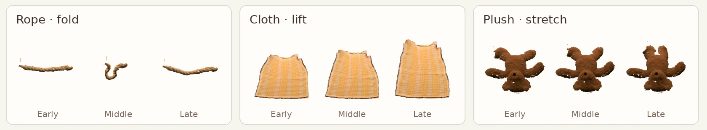
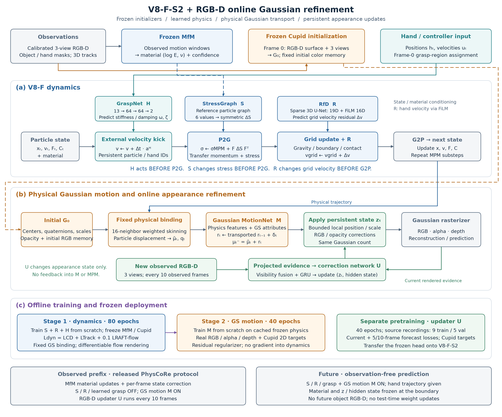

Anonymous supplementary material
DeformForward
Generalizable Feed-Forward Physics–Appearance Modeling for Deformable Object Manipulation

Abstract
Predicting deformable manipulation requires modeling how an object moves under an action and how that motion changes its appearance. DeformForward couples a Material Point Method simulator with 3D Gaussians. Learned stress, grid velocity, and grasp terms update the physical state. Particle bindings and a learned Gaussian motion residual carry this motion to the rendered surface.
The system initializes appearance from calibrated observations and updates existing Gaussians as new RGB-D frames arrive. After the observation cutoff, it predicts motion and appearance from the retained state and the supplied action trajectory. We evaluate future prediction on 12 public PhysCoRe scenes and transfer frozen models to six separately collected recordings.
Method


Results
PhysCoRe benchmark
Twelve scenes covering rope, cloth, plush, and plasticine. DeformForward trains on the observed prefixes of these scenes and applies RGB-D refinement before the forecast cutoff.
Rope · Center lift
Rope · End lift
Rope · Push
Rope · Fold
Cloth · Center lift
Cloth · One-corner lift
Cloth · Two-corner lift
Plush bear · One-limb lift
Plush bear · Stretch, recording 1
Plush bear · Stretch, recording 2
Plasticine · Squeeze
Plasticine · Stretch
Transfer to self-collected recordings
Six recordings of new objects with frozen model weights. The particle views compare dynamics. The rightmost panel shows our Gaussian rendering.
1D · Rope push
1D · Rope lift
2D · Cloth, recording 1
2D · Cloth, recording 2
3D · Plush, recording 1
3D · Plush, recording 2
Videos show only the future segment. All panels share the recorded background at 30% strength, with the reference object removed before compositing. Image scores use the original renders.
Per-recording results
Future-segment means over the scored frames. CD and Track use millimeters. Image metrics use camera 0 and the PhysTwin full-image scoring protocol.
| Recording | Method | CD ↓ (mm) | Track ↓ (mm) | IoU ↑ (%) | PSNR ↑ (dB) | SSIM ↑ | LPIPS ↓ |
|---|---|---|---|---|---|---|---|
| Rope · Center lift | PhysCoRe | 5.08 | 17.09 | 56.32 | 31.08 | 0.9890 | 0.0135 |
| PhysTwin | 7.27 | 16.49 | 52.83 | 31.42 | 0.9898 | 0.0164 | |
| DeformForward | 5.52 | 16.90 | 47.88 | 31.81 | 0.9894 | 0.0123 | |
| Rope · End lift | PhysCoRe | 3.30 | 12.41 | 71.60 | 32.47 | 0.9910 | 0.0102 |
| PhysTwin | 4.27 | 14.01 | 61.20 | 31.24 | 0.9893 | 0.0127 | |
| DeformForward | 6.95 | 19.15 | 48.19 | 32.64 | 0.9892 | 0.0117 | |
| Rope · Push | PhysCoRe | 5.33 | 28.79 | 50.19 | 29.60 | 0.9895 | 0.0158 |
| PhysTwin | 12.78 | 44.62 | 27.67 | 27.82 | 0.9880 | 0.0221 | |
| DeformForward | 3.56 | 20.86 | 70.71 | 34.45 | 0.9928 | 0.0079 | |
| Rope · Fold | PhysCoRe | 6.19 | 23.54 | 50.32 | 28.27 | 0.9832 | 0.0178 |
| PhysTwin | 3.01 | 10.17 | 62.92 | 30.78 | 0.9859 | 0.0169 | |
| DeformForward | 5.26 | 22.12 | 51.72 | 29.35 | 0.9854 | 0.0146 | |
| Cloth · Center lift | PhysCoRe | 18.92 | 47.77 | 62.03 | 21.52 | 0.9518 | 0.0590 |
| PhysTwin | 13.62 | 38.31 | 60.18 | 21.75 | 0.9494 | 0.0627 | |
| DeformForward | 16.35 | 42.62 | 73.92 | 23.71 | 0.9617 | 0.0458 | |
| Cloth · One-corner lift | PhysCoRe | 9.42 | 20.78 | 80.31 | 22.93 | 0.9622 | 0.0359 |
| PhysTwin | 7.84 | 19.95 | 80.63 | 23.55 | 0.9661 | 0.0376 | |
| DeformForward | 7.36 | 20.89 | 92.72 | 25.93 | 0.9649 | 0.0275 | |
| Cloth · Two-corner lift | PhysCoRe | 14.29 | 25.17 | 89.44 | 21.87 | 0.9489 | 0.0414 |
| PhysTwin | 8.05 | 18.04 | 89.92 | 22.26 | 0.9381 | 0.0415 | |
| DeformForward | 9.80 | 22.16 | 91.97 | 24.44 | 0.9492 | 0.0396 | |
| Plush bear · One-limb lift | PhysCoRe | 6.49 | 30.71 | 76.00 | 26.49 | 0.9197 | 0.0689 |
| PhysTwin | 7.14 | 27.03 | 75.79 | 26.71 | 0.9180 | 0.0630 | |
| DeformForward | 5.13 | 21.16 | 80.70 | 28.20 | 0.9343 | 0.0529 | |
| Plush bear · Stretch, recording 1 | PhysCoRe | 5.20 | 12.58 | 87.09 | 28.52 | 0.9108 | 0.0320 |
| PhysTwin | 6.01 | 15.57 | 86.78 | 28.61 | 0.9095 | 0.0376 | |
| DeformForward | 3.81 | 8.88 | 91.09 | 30.72 | 0.9297 | 0.0454 | |
| Plush bear · Stretch, recording 2 | PhysCoRe | 5.98 | 25.16 | 78.80 | 27.32 | 0.9253 | 0.0471 |
| PhysTwin | 4.81 | 13.59 | 85.18 | 28.99 | 0.9320 | 0.0303 | |
| DeformForward | 4.12 | 9.92 | 83.87 | 29.63 | 0.9385 | 0.0445 | |
| Plasticine · Squeeze | PhysCoRe | 10.56 | 13.71 | 77.48 | 34.80 | 0.9955 | 0.0053 |
| PhysTwin | 5.07 | 12.92 | 73.35 | 37.90 | 0.9961 | 0.0099 | |
| DeformForward | 10.56 | 13.71 | 75.50 | 34.70 | 0.9948 | 0.0058 | |
| Plasticine · Stretch | PhysCoRe | 3.75 | 19.90 | 75.60 | 36.42 | 0.9961 | 0.0079 |
| PhysTwin | 3.41 | 8.96 | 70.62 | 36.62 | 0.9962 | 0.0095 | |
| DeformForward | 3.66 | 13.60 | 74.30 | 37.30 | 0.9964 | 0.0054 |
| Recording | Method | CD ↓ (mm) | Track ↓ (mm) | IoU ↑ (%) | PSNR ↑ (dB) |
|---|---|---|---|---|---|
| 1D · Rope push | PhysCoRe (adapted) | 14.10 | 45.29 | — | — |
| DeformForward | 13.80 | 46.84 | 19.85 | 26.07 | |
| 1D · Rope lift | PhysCoRe (adapted) | 15.87 | 56.08 | — | — |
| DeformForward | 15.07 | 43.47 | 11.31 | 27.93 | |
| 2D · Cloth, recording 1 | PhysCoRe (adapted) | 49.20 | 98.87 | — | — |
| DeformForward | 40.96 | 101.08 | 35.86 | 15.16 | |
| 2D · Cloth, recording 2 | PhysCoRe (adapted) | 30.75 | 65.63 | — | — |
| DeformForward | 16.84 | 51.17 | 77.79 | 19.25 | |
| 3D · Plush, recording 1 | PhysCoRe (adapted) | 16.88 | 58.39 | — | — |
| DeformForward | 15.68 | 47.54 | 61.85 | 20.64 | |
| 3D · Plush, recording 2 | PhysCoRe (adapted) | 9.89 | 38.95 | — | — |
| DeformForward | 10.41 | 43.33 | 65.55 | 23.73 |
On self-collected recordings, both physics methods use adapted input preprocessing, including manual verification of sparse observations and contact cues. PhysCoRe is scored on geometry. IoU and PSNR are reported for DeformForward’s Gaussian renders.